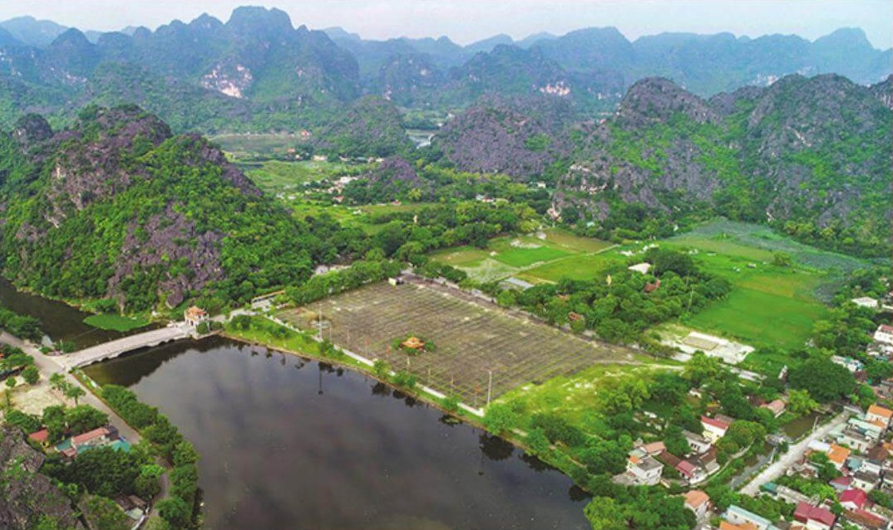
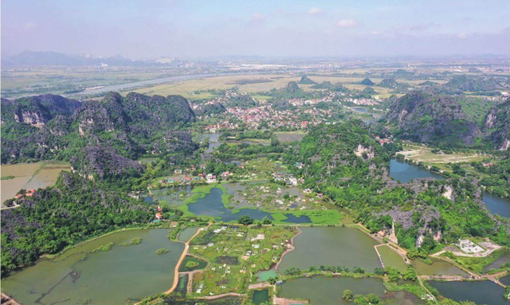

CỐ ĐÔ HOA LƯ
유적지 개요

호아루 고도 역사문화 유적지는 특별 국가 유적군입니다. 역사상 처음으로 호아루는 베트남의 중앙집권적 봉건 국가의 도읍이 되었습니다. 이곳은 딘(Đinh), 전레(Tiền Lê) 왕조와 리(Lý) 왕조 초기로 이어지는 3개 왕조의 장엄한 위업이 시작된 발상지입니다.
968년 조국을 통일한 후, 딘 보 린(Đinh Bộ Lĩnh)은 황제에 즉위하여 국호를 대구월(Đại Cồ Việt)로 정하고 호아루에 도읍을 정했으며, "성을 쌓고 해자를 파며, 궁궐을 짓고 조의(朝儀, 조정의 예법)를 정하라"고 명했습니다. 그 위업을 이어 980년 레 다이 한(Lê Đại Hành) 왕이 황제에 오르면서 웅장하고 화려한 궁궐들을 많이 건설하게 했습니다.
10세기 당시, 갓 독립을 쟁취하여 중앙집권적 봉건 정권이 아직 초기 단계였던 역사적 배경 속에서 두 왕이 험준한 지형의 호아루를 도읍으로 선택한 것은 전략적인 안목을 보여줍니다. 이는 내부의 반란과 외부의 적에 대처하기 위해 난공불락의 견고한 군사 요새를 구축하기 위함이었습니다.

1010년, 독립된 봉건 국가의 번영을 위한 확고하고 전면적인 기반을 다지기 위해 리 타이 쪼(Lý Thái Tổ) 황제는 다이라(Đại La)성으로 천도하였고, 이후 이름을 탕롱(Thăng Long, 현재의 하노이)으로 바꾸었습니다. 그때부터 호아루는 고도(古都, 옛 도읍)가 되었습니다. 역사의 풍파를 거치며 금과 은으로 치장되었던 궁궐들은 더 이상 남아있지 않습니다.
전해지는 바에 따르면, 리 타이 쪼 황제가 천도한 후 건국과 호국에 공헌한 민족 영웅들의 공로를 기리기 위해 리 왕조는 북쪽을 향하는 사당을 짓게 했다고 합니다. 그러나 리 왕조가 지은 사당은 현재 남아있지 않습니다. 그 뒤를 이은 왕조들은 항상 호아루를 향한 마음을 잊지 않고 더 많은 문화·역사 건축물들을 보수하고 추가로 건립했습니다. 덕분에 오늘날 호아루 고도를 방문하여 참배하는 관광객들은 한때 명성 높았던 제국의 수도였으며 현재까지도 많은 찬란한 흔적을 남기고 있는 이 지역에 대해 더 깊이 이해할 수 있는 기회를 갖게 되었습니다.
현재 호아루 고도에는 딘 왕조와 전레 왕조에 관련된 20개가 넘는 유적지가 있으며, 능묘, 사당, 묘, 부(phủ), 사찰 등 다양한 형태의 제사 시설을 포함하고 있습니다. 일주사(Chùa Nhất Trụ), 특띠엣 공주 사당, 낀티엔 부(Phủ Kình Thiên) 등과 같은 유명한 유적지들이 있습니다. 그러나 이들 유적 중 가장 대표적이고 특징적인 곳은 단연 딘 띠엔 황 왕 사당과 레 다이 한 왕 사당입니다. 이 두 건축물은 여러 왕조에 걸쳐 차례로 건립되고 중수되었지만, 현재까지도 17세기 후레(Hậu Lê) 시대의 건축 양식의 특징을 짙게 간직하고 있습니다.